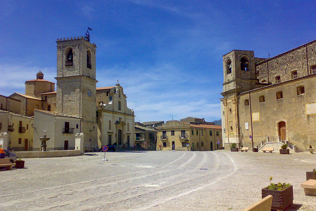
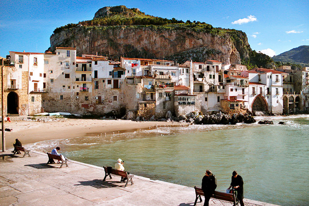
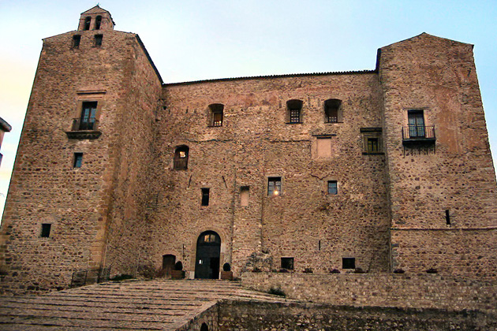

Cinema Paradiso
Main Content

There’s a brief glimpse of Rome near the beginning of Giuseppe Tornatore’s unashamedly nostalgic love letter to the old fashioned dream palace. Salvatore Di Vita (Jacques Perrin) drives along Via del Corso, with the huge Vittorio Emmanuele Monument in the background, but the rest of the film is set in northwestern Sicily, around the fictitious village of ‘Giancaldo’.
In the Sicilian village, projectionist Alfredo (Philippe Noiret) bequeaths a love of movies to the young Salvatore, known as Toto (Salvatore Cascio) – though Alfredo’s role is much darker in the 50-minute longer Director’s Cut.
‘Giancaldo’ is based on the director’s birthplace of Bagheria, a short train or bus ride to the east of Palermo in northern Sicily (and home to the amazing Villa Palagonia, featured in Michelangelo Antonioni’s L’Avventura).
Although scenes were filmed in Bagheria, the famous town square is Piazza Umberto I in the village of Palazzo Adriano, about 30 miles to the south of Palermo on SS188. It’s close to the towns of Prizzi and Corleone, both of which have passed their names on to Hollywood.
The ‘Paradiso’ cinema was built here, at Via Nino Bixio, overlooking the octagonal Baroque fountain, which dates from 1608. The set obviously didn’t survive the filming, but you can still recognise the nearby house onto which Alfredo projects I Pompieri Di Viggiu (The Firemen Of Viggiu), starring another Toto – the hugely popular Italian comic actor of the Fifties and Sixties.
Just to the west, the two churches seen in the film face each other across the piazza.
It’s outside the solid, square-towered Chiesa Maria SS Assunta that local women are spreading tomato paste on wooden boards to dry in the sun, until they’re disturbed by the eccentric who constantly pops up claiming ownership of the piazza.
The teenage Toto (Marco Leonardi) later sits on the church’s steps as he contemplates whether to follow Alfredo’s advice and leave ‘Giancaldo’ to pursue a film career in Rome.
Palazzo Adriano was originally an Albanian settlement (one of its streets is Via Skanderbeg, named after Albania’s 15th Century nationalist hero) and this church, built in 1532 but enlarged in 1770, is the Albanian Greek Orthodox Cathedral.
Opposite stands the more typically Italianate Chiesa Santa Maria del Lume, with its clocktower, where the adult Toto attends Alfredo’s funeral towards the end of the film.

The war-damaged streets, through which Toto walks with his distraught mother after they receive confirmation of his father’s death, are Ruderi Di Poggioreale, the ruins of Poggioreale, about 20 miles to the west. Now a ghost town, Poggioreale was in fact destroyed not by the bombs of WWII but by a massive earthquake in 1968. The abandoned town is on SP27, a couple of miles north of the rebuilt newtown, Nuovo Poggioreale.

Almost 50 miles northeast, towards the coastal resort of Cefalù, is Castelbuono, where the 14th Century Castello dei Ventimiglia became Toto’s school. The fortress was built for Francesco I Ventimiglia on a hill called San Pietro of Ypsigro, and was dubbed Castello del Buon Aere, ‘Castle of good air’, the origin of Castelbuono’s name. For six centuries it was home to the Ventimiglia family, but was bought by the municipality in the 1920s and is now open for tours.
In Cefalù itself, the ‘Arena Imperia’, where a seafront showing of the 1954 epic Ulysses, with Kirk Douglas, is interrupted by a summer rainstorm, is the town’s Porta Marina, with its Gothic arch – the only remaining city gate of four that once afforded access to the town. The audience is seated on the port’s Molo Vecchio (Old Pier) while locals enjoy the show from boats in the bay.
Cefalù, once a fishing village, is overlooked by an imposing limestone headland, which gives the town its name. Originally a Greek settlement, the name derives from ‘Kefaloidion’, meaning ‘head’.
Visit Info
Visit The Film Locations
Italy
Visit: Italy
Visit: Sicily
Visit: Cefalù
Visit: Castelbuono